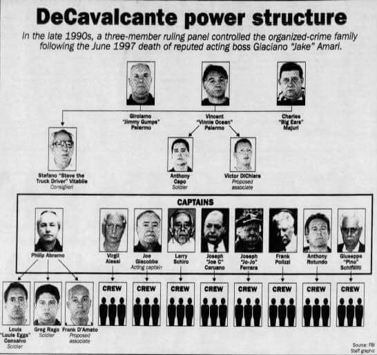

La Familia DeCavalcante
La Familia Criminal DeCavalcante es una organización criminal que controla las actividades del crimen organizado en Elizabeth y en Newark (Nueva Jersey), a pesar de que algunos de sus miembros viven al otro lado del río Hudson, en Nueva York, dentro del fenómeno nacional delictivo conocido como la mafia (o Cosa Nostra). Esta familia mantiene fuertes relaciones con gran parte de las Cinco Familias de Nueva York, incluida la Familia criminal de Philadelphia y la Familia criminal Patriarca de Boston y gran parte de Nueva Inglaterra. Sus actividades ilícitas laborales incluyen la extorsión, el blanqueo de dinero, el tráfico de drogas, juego ilegal, usura, sicarios, construcción, edificación y violación de cemento, fraude, secuestro y venta de artículos robados. Se cree que la ficticia Familia criminal DiMeo de la serie original de Los Soprano, se inspira en la vida real de la familia DeCavalcante.
